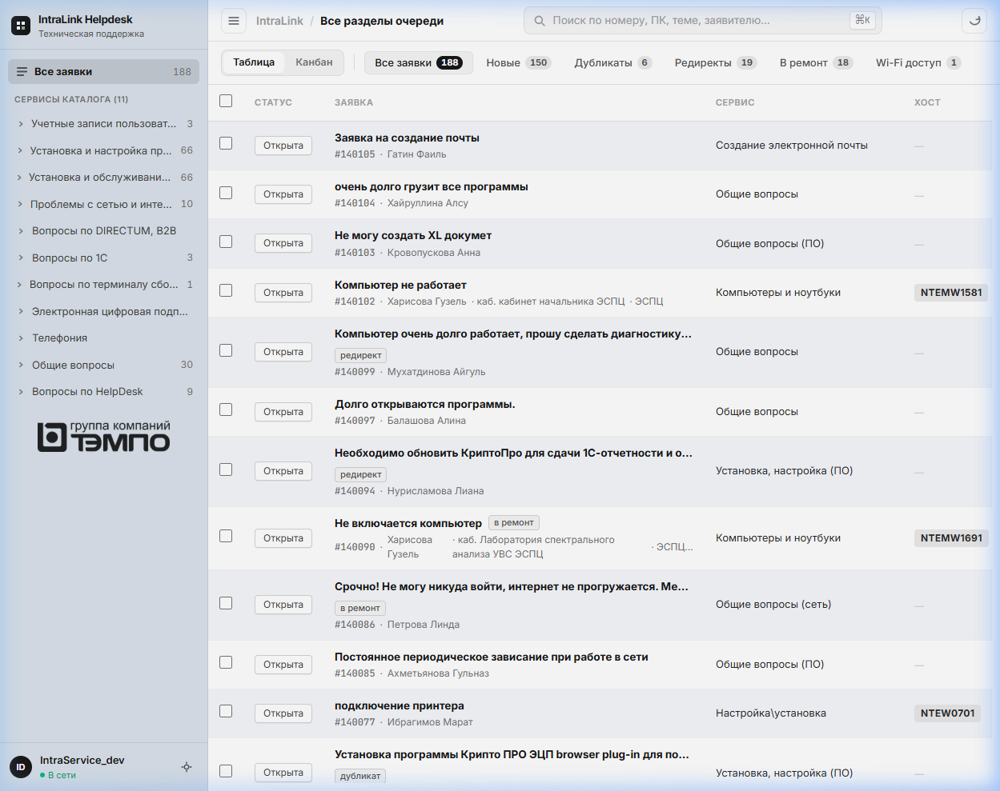
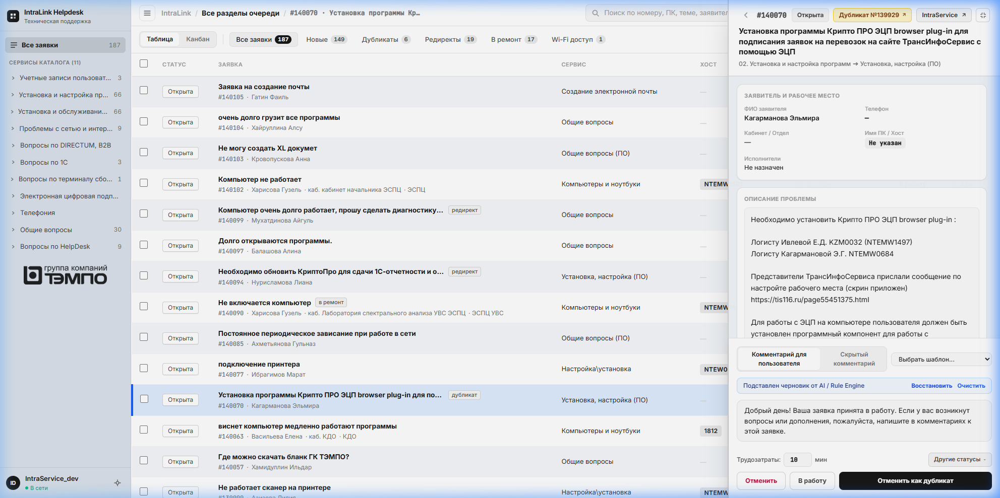
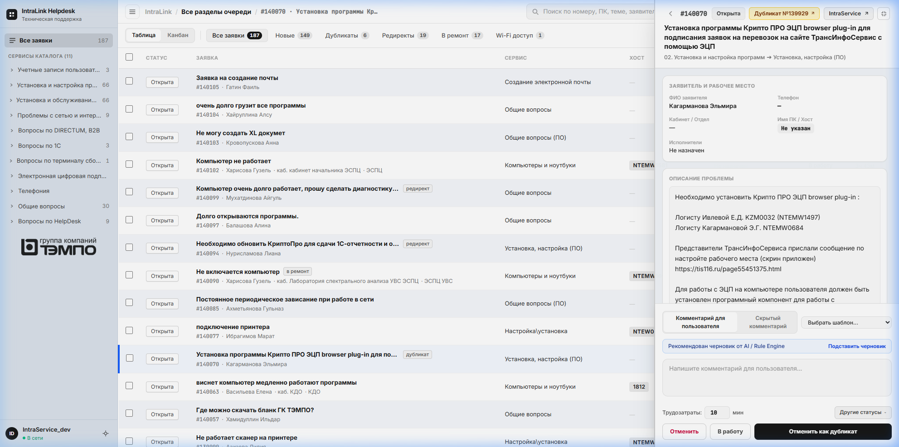
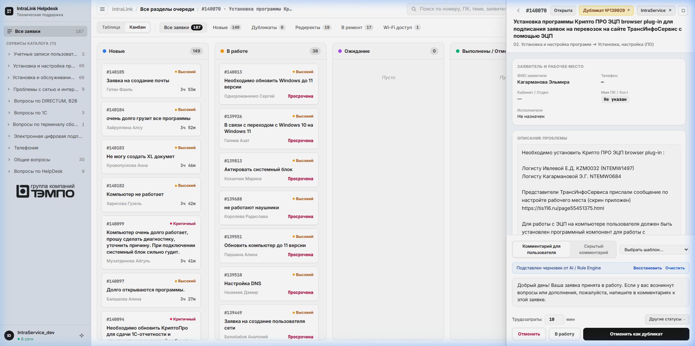

Автоматизация триажа, семантическая RAG-база знаний (pgvector), локальная LLM-суммаризация, компьютерное зрение и роботизация инфраструктурных задач — всё в закрытом On-Premise контуре компании.
С чем сталкивается ИТ-отдел при классическом ручном обслуживании заявок в Helpdesk
40–50% заявок — типовые задачи: Wi-Fi, пароли, принтеры, базовые консультации.
До 15 минут на ручные операции: открыть тикет, сменить статус, вставить шаблон, списать трудозатраты.
В пиковые часы накапливается очередь («завал»), срываются регламентные нормативы SLA.
10 000+ закрытых кейсов заперты в архиве без возможности быстрого семантического поиска.
Новый инженер заново исследует сбой, который уже решался коллегой на прошлой неделе.
Рост MTTR сложных инцидентов из-за долгого ручного поиска готовых инструкций.
До 25% входящего потока — повторные заявки-дубликаты от нетерпеливых пользователей.
Ошибочные направления: тикеты для АХО, безопасности или бухгалтерии — в ИТ-очередь.
Ручная отмена и разъяснения отнимают драгоценные часы у ведущих специалистов.
Единый интеллектуальный мозг, детерминированные правила и прямое исполнение
Оперативный контроль потока заявок в реальном времени со смарт-фильтрацией
Смарт-фильтры по 11 направлениям: Все, Wi-Fi, 1C, Доступы, Принтеры, Ремонт, Сеть, Почта, Оборудование.
Цветовая шкала SLA: Подсветка тикетов с приближающимся дедлайном (Critical / Urgent / Normal).
Автопривязка ПК и контактов: Извлечение имени ПК (NB-0081, PC-114) из текста заявки.
Real-time обновления через Redis Streams без перезагрузки страницы.

Мгновенное извлечение готовых инструкций из 10 000+ архивных кейсов
Автосинхронизация (/sync): Каждая закрытая заявка векторизуется моделью FastEmbed и сохраняется в pgvector.
Семантическое понимание сути: Поиск находит решения по смыслу — понимает синонимы, опечатки, разное описание сбоя.
Скорость отклика: Поиск по 10 000+ кейсам занимает менее 50 мс.
• Сокращение времени диагностики сложных сбоев с 30 минут до 1 минуты.
Быстрый онбординг новичков: начинающий инженер сразу видит шаги решения от ведущих экспертов.
Стандартизация качества: пользователи получают выверенные инструкции.
Zero Cloud Leakage: все векторные базы работают строго на сервере компании.
Контекстный анализ заявки, обнаружение дубликатов и персонализированные ответы
Авто-генерация ответов: Формирует персонализированный черновик с именем заявителя и регламентными шагами.
Авто-определение дубликата: Инспектор подсвечивает: «Обнаружен дубликат #139929» с кнопкой объединения.
Режимы отправки: Комментарий, перевод в ожидание или автозакрытие со списанием трудозатрат.

Автоматическая очистка очереди от повторов и ошибочно направленных тикетов
Проблема: Пользователи создают 2–3 одинаковые заявки через портал, почту и телефон.
AI-Решение (/duplicates): Алгоритм находит семантические и временные совпадения, определяет Master Ticket, переводит копии в «Отменена» и оставляет комментарий со ссылкой на главный тикет.
Проблема: Заявки на ремонт мебели, пропуска или замену ламп ошибочно попадают в очередь ИТ-отдела.
AI-Решение (/redirect): Система распознаёт нецелевой сервис, отменяет ошибочный тикет и отправляет заявителю точную ссылку на нужный отдел (АХО, СБ, Кадры).
Мгновенная проверка доступности хоста заявителя по сетевым протоколам
/diag)Параллельная 4-точечная проверка:
Скорость: Все проверки выполняются параллельно менее чем за 1 секунду.

Мультимодальный анализ скриншотов и моментальная суммаризация диалогов
/screen)Автоскачивание вложений из IntraService по номеру заявки.
Распознавание системных окон: ошибки 1С, синие экраны (BSOD), сетевые ошибки Windows, сбои драйверов.
Формирование гипотезы Root Cause и чек-листа решения до первого контакта с пользователем.
Модель: Qwen2.5:1.5B в изолированном Docker-контейнере.
Сжатие переписки: Анализирует длинную ветку из 10+ комментариев за 1.3 секунды.
Структурированная выжимка:
Автоматическое применение изменений в Active Directory и Windows-домене
Выдача корпоративного Wi-Fi (WLAN-WORKNET) за 2 секунды.
Нормализация ФИО/инициалов и поиск учётной записи в домене.
Single-DC Affinity: исключение проблем репликации между контроллерами.
Удалённая установка драйверов принтеров без визита к рабочему месту.
База моделей оргтехники и автоматическое сопоставление сетевых портов.
WMI bootstrap и Fail-Fast диагностика портов.
Статус «Выполнена» выставляется только после успешного кода возврата от контроллера домена.
Автоматическое списание трудозатрат и протоколирование аудита.
Визуализация жизненного цикла заявок по стадиям обработки 1-й линии
Колонки стадий: Новые → В работе → Требует уточнения → Выполнены.
Контроль завалов: Руководитель группы сразу видит, на какой стадии скапливаются тикеты.
Быстрый фокус: Клик по карточке мгновенно открывает инспектор и варианты решения.

100% On-Premise, криптографическая защита и строгий аудит действий
Полный On-Premise хостинг (Docker, Postgres 16, Redis 7, Core API).
Никакие персональные данные, пароли или тексты заявок не отправляются в публичные облачные LLM.
Доменные учётные данные шифруются симметричным ключом Fernet.
Бот не хранит пароли пользователей локально.
Защита от Timing Attacks (secrets.compare_digest).
Двойное логирование: основной инженер + ассистент.
Фиксация каждого изменения в истории IntraService с точным списанием времени.
Полная прозрачность для службы ИБ.
Реальные показатели внедрения на ежедневной рабочей нагрузке 1-й линии
Было: ~25 мин ручной работы
Стало: 1.5 мин автоматически
Было: 30 мин диагностики
Стало: <2 мин с RAG-поиском
Без ручного набора текста
Шаблоны + автозакрытие
Для инфраструктурных проектов
Развития и оптимизации
Ключевые направления масштабирования платформы на следующие кварталы
/triage)Интерактивный AI-саппорт в Telegram для пользователей (самообслуживание).
Аудио-транскрипция голосовых заявок и звонков (Whisper local).
Расширение библиотеки драйверов оргтехники и SNMP-мониторинг картриджей.
Предиктивная аналитика сбоев рабочих станций до создания тикета заявителем.
Автоматический аудит узких мест ИТ-процессов.
Кросс-сервисная интеграция с 1C и корпоративной телефонией.
IntraLink AI превратил 1-ю линию поддержки из перегруженного узкого горлышка в прозрачный, защищённый и быстрый сервис.
Готовы ответить на ваши вопросы и продемонстрировать систему в действии.
Веб-панель:
Документация: